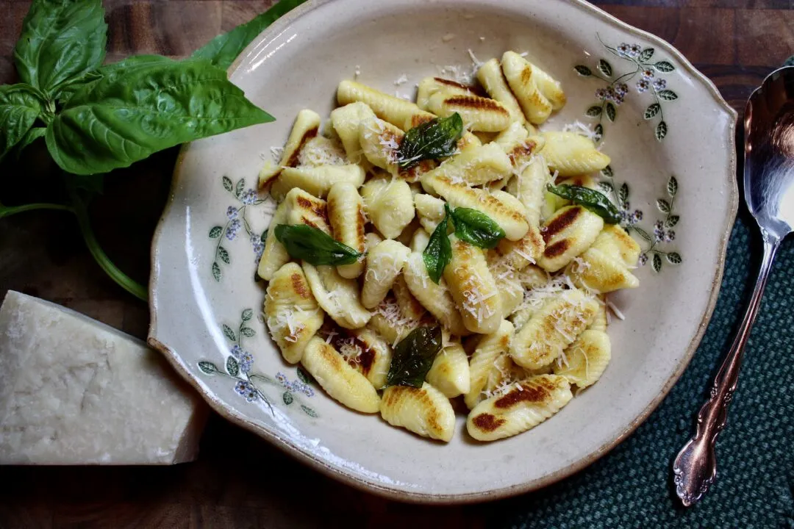

Simple and Easy Buttered Gnocchi

Description
Soft, warm pillows of potatoey goodness! If you like pasta, or potatoes for that matter, you’ll love this simple and easy buttered gnocchi recipe. It provides the tastiness of fresh, homemade pasta whilst not requiring as much effort in cutting and shaping. With traditional pasta, you either roll the dough out thinly, by hand or with a pasta roller, then cut them and or create shapes. Gnocchi is far simpler. All you need to do is roll the dough into a log and cut it into bite-sized pieces. You can also use a gnocchi paddle to make the textural lines, which work wonders in soaking up sauce, but this is optional!
Gnocchi, like pasta, has so many flavors it can mesh with. Tomato sauce is probably the most popular gnocchi combo, however, there are countless variations! My favorite is with a light white wine sauce and freshly sauteed spring vegetables.
In this recipe, we garnished the gnocchi with shreds of basil and fried basil leaves. The leaves were lightly fried in olive oil for 2-5 seconds and left to dry on a cloth until serving. The fried leaves are so crisp and brittle, providing a welcomed textural contrast in addition to the fragrant basil flavor! What’s so amazing is that the basil retains its vibrant green color, yet it becomes translucent, almost like stained glass. Beautiful and delicious.
Ingredients
- 4 medium potatoes
- 2 eggs
- 1 teaspoon salt
- 1 ¼ cups flour
- 2 tablespoons butter
- A few sprigs of basil
Steps
- Preheat the oven to 400°F.
- Wash, dry, and prick the potatoes all over with a knife or fork.
- On a baking sheet, rub the potatoes with olive oil and sprinkle with salt and pepper. Place in the oven to bake for 45 minutes-1 hour, or until the potatoes are tender.
- Set the potatoes aside until they are cool enough to handle and peel the skin off. With a masher or ricer, break the potatoes down into a consistent mixture.
- In a large bowl, combine the mashed/riced potatoes, two eggs, and salt. Mix until well combined.
- On a large work surface, place the flour into a mound and make a small well. Place the potato-egg mixture into the well and begin to work in the flour. Knead the dough for about three minutes, or until the dough looks smooth and well combined.
- Roll the dough into a short log, and cut into four equal pieces. Then proceed to roll these pieces out until it has reached a diameter of about half an inch. Using a knife or dough scraper, cut the long tubes into 1-inch pieces.
- The gnocchi is perfectly ready to cook now, but if you wish to add a little textural design, make small creases using a fork or gnocchi paddle.
- Bring a large pot of water to boil and salt generously.
- Carefully drop the gnocchi into the water and cook just until they begin to float to the surface, about a minute. Drain and set aside.
- Quickly, in a large saute pan over medium-high heat, drop in two tablespoons of butter. Once melted, toss in the gnocchi and cook until golden brown, about 3-5 minutes.
Nutrition
- Calories: 372
- Carbohydrates: 63g
- Cholesterol: 97mg
- Fat: 9g
- Fiber: 6g
- Protein: 10g
- Saturated fat: 4g
- Sodium: 667mg
- Sugar: 3g